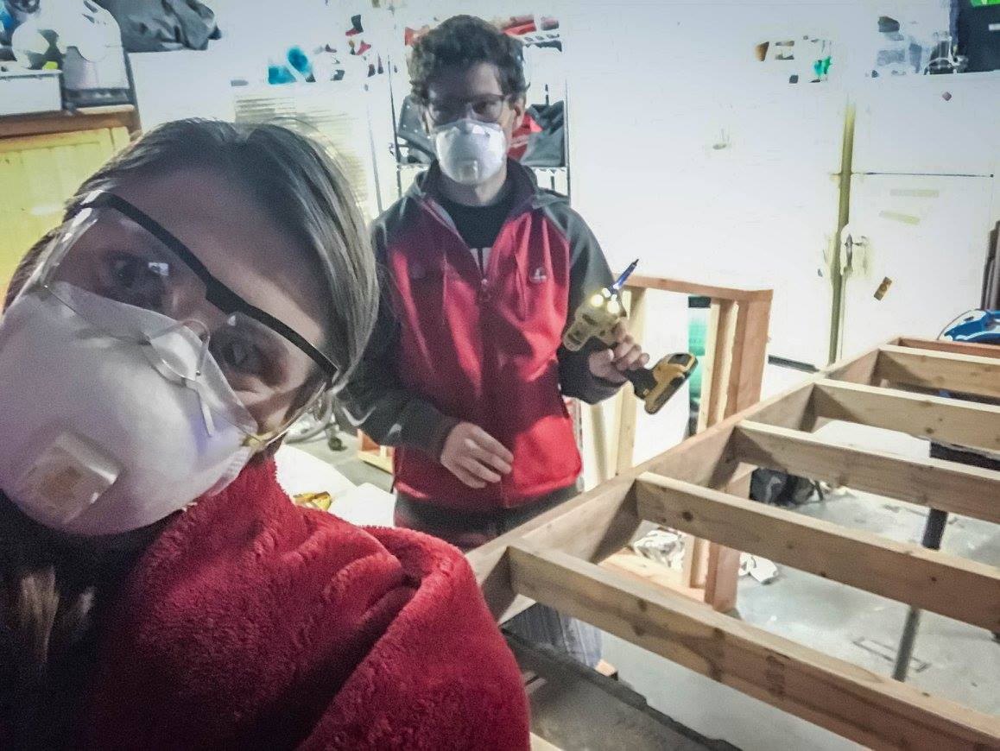
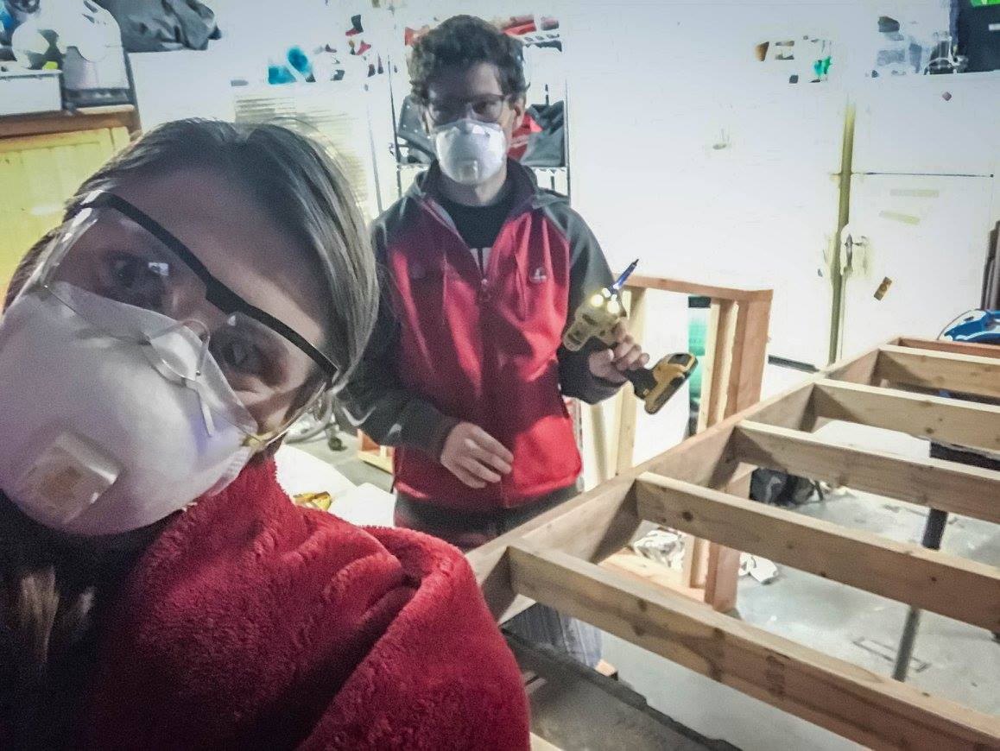

Four-Poster Bunkbeds
April, 2017

My first wood project! Led by the great Steve the Builder (a former housemate of ours now living and working in New Zealand), we built three bunkbeds for two different rooms in our lovely home. Two of them were full-size, and one was a twin. I slept in one of them for about a year, and have now moved into a different one.
As seen below, the design involves making two platforms for each of the sleeping areas. They're attached to notches cut out of four large, sturdy 4x4 posts that serve as the legs. Bolts, screws, and dimensions aside, the design for each bed requires:
- Eight pieces of 2x6 plywood (four for the outside of each sleeping platform).
- Twelve pieces of 2x4 plywood (six for the base of each sleeping platform).
- Four x eight-foot 4x4 posts.
After making all the cuts (again, I'll look up dimensions and repost this - we're making more right now!), we began by assembling the sleeping platforms. That involved bolting the 2x6 plywood into the rectangular outer frame, then evenly spacing and screwing in the 2x4s between the top and bottom of the frame. The 2x4s are flush to the bottom of the frame, so that a mattress sitting on top has a lip to keep it from sliding off onto the ground.
The two sleeping platforms assembled, the next step is to make two notches in each of the corner posts the height of the 2x6s. This accepts the frame. The whole design is made much stronger by using the notches to support the platforms, rather than them just being screwed in. The notches are a bit tricky to cut, but can be done by using a jigsaw, making lots of parallel cuts close together, and then chiseling them out. With some sanding, the notch is relatively easy to work to the size of the sleeping platform.
 

The last step once the notches are cut is to assemble the whole frame! We found that the weight of the pieces made this a many-person job. Eventually, we found that attaching the frame to two of the posts along one longer side was the best first step. Then, with several people holding the platforms steady, the other posts could be brought in from the side and hammered into position.

We're talking about making some more of these right now, so should be revisiting the process soon and will be back with any new insights that arise!